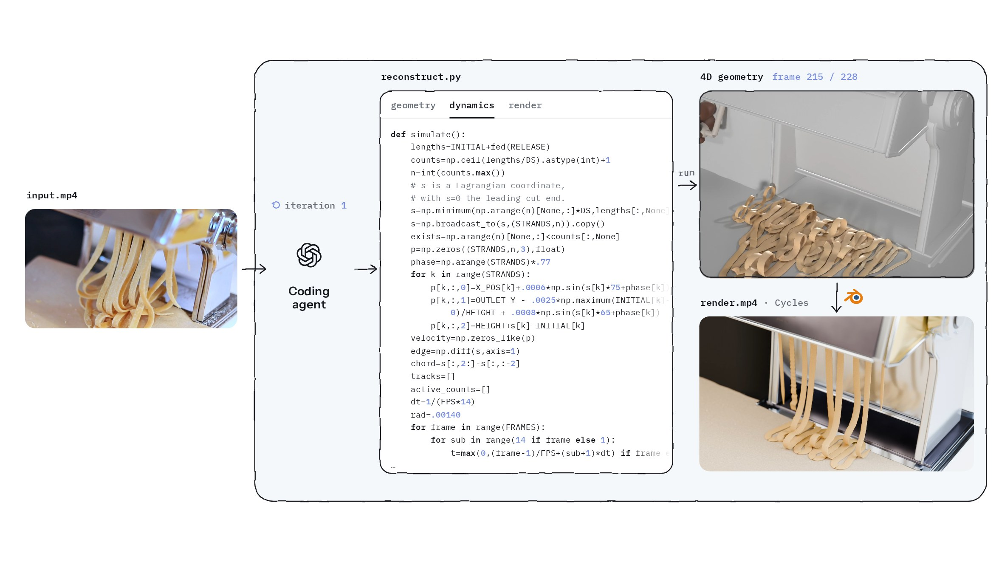
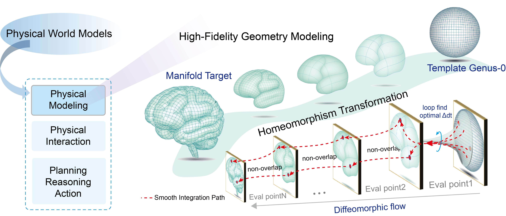
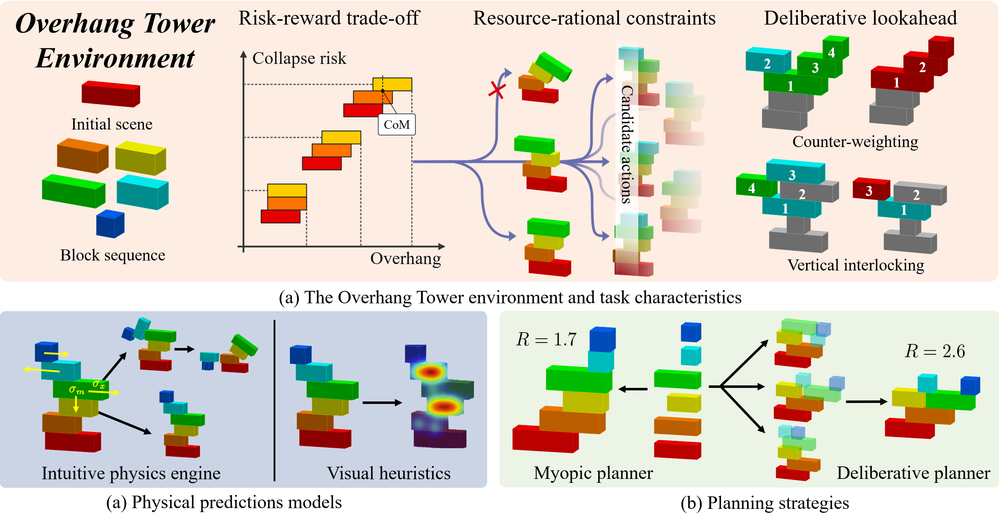
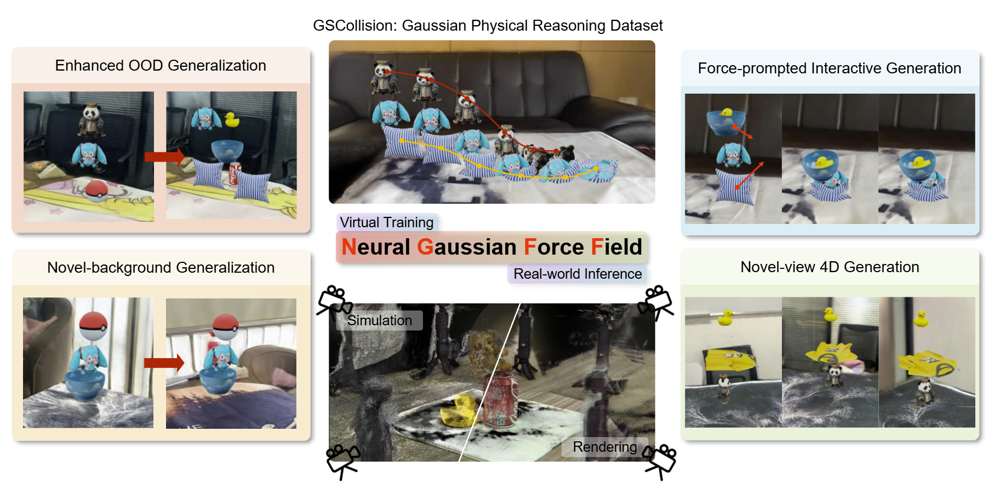
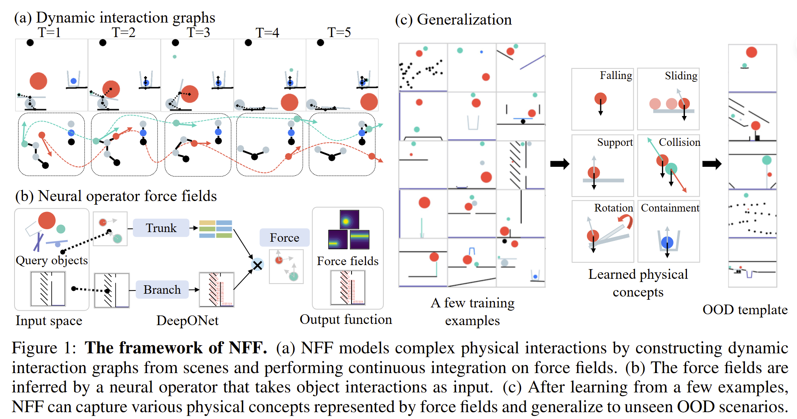

[2026/05] One paper is accepted by Science.
Ruihong Shen | 沈睿弘
Hi! I'm ruihong, a senior student in Zhi Class 2023 at the School of Electronics Engineering and Computer Science (EECS) of Peking University. I am pursuing a degree in Intelligence Science and Technology. I am currently advised by Prof. Yixin Zhu at Cognitive Reasoning (CoRe) Lab, Peking University.
My current research interest lies in physical reasoning and world models, with the goal of equipping AI agents with human-like physical commonsense to better interact with our physical world. Feel free to reach out if you have any comments, questions about me, my research, or anything else! 🥺
I'm seeking PhD opportunities starting in Fall 2027.
News
[2026/04] One paper is accepted by CogSci 2026.
[2026/03] I will visit the CCVL lab at JHU this summer, fortunate to be advised by Prof. Alan Yuille and Dr. Jieneng Chen.
[2026/01] Two papers are accepted by ICLR 2026.
Research
* Joint first author † Corresponding author

4DCodeBench: Benchmarking Agents on Inverse Graphics of Dynamic Scenes
PDF / Project Page / Github / Dataset
arXiv 2026
We introduce 4DCodeBench, a benchmark for 4D inverse graphics through code generation, in which agents reconstruct dynamic scenes from video as executable graphics programs. To accomplish this, agents must translate visual observations into compact representations of scene structure and dynamics, by implementing abstractions such as physical simulations to reproduce complex behavior. To evaluate this capability, we curate a set of real-world videos and construct synthetic scenes spanning diverse physical phenomena, including deformation, fluid flow, and fracture. We perform extensive benchmarking of frontier models, finding that strong static reconstruction capabilities do not yet translate into reliable reconstruction of complex dynamics. 4DCodeBench provides a testbed for tracking progress toward agents that can interpret the dynamics of the world through code.

A sub-10ms neural dynamical system based on phase change memristors
Science 2026
High-fidelity geometry for physical-world modeling demands real-time, dense, and differentiable deformation fields on manifolds. Neural dynamical systems (NDSs) using adaptive stepsize integration with embedded neural networks excel at these tasks but still suffer latency on the order of hundreds of milliseconds. In this work, we report a sub–10-millisecond NDS hardware leveraging the precisely controlled conductance drift of phase-change memristors and their multilevel compute-in-memory capabilities. We fabricated a 40-nanometer NDS chip for the challenging surface reconstruction tasks. Compared with state-of-the-art NDS hardware, our NDS design achieves a latency of 2.12 milliseconds (below 10 milliseconds) for single-iteration NDS computations with an error tolerance of 10−7 and delivers 3.82× to 36.27× faster speed while consuming 11.75× to 24.73× less power. The end-to-end NDS latency through hardware measurements and simulations outperformed graphics processing unit A100 by 50.38× to 478.18×.

Overhang Tower: Resource-Rational Adaptation in Sequential Physical Planning
PDF / Project Page / Video / Github
The 48th Annual Meeting of the Cognitive Science Society (CogSci 2026)
Humans effortlessly navigate the physical world by predicting how objects behave under gravity and contact forces, yet how such judgments support sequential physical planning under resource constraints remains poorly understood. Research on intuitive physics debates whether prediction relies on the Intuitive Physics Engine (IPE) or fast, cue-based heuristics; separately, decision-making research debates deliberative lookahead versus myopic strategies. These debates have proceeded in isolation, leaving the cognitive architecture of sequential physical planning underspecified. How physical prediction mechanisms and planning strategies jointly adapt under limited cognitive resources remains an open question. Here we show that humans exhibit a dual transition under resource pressure, simultaneously shifting both physical prediction mechanism and planning strategy to match cognitive budget. Using Overhang Tower, a construction task requiring participants to maximize horizontal overhang while maintaining stability, we find that IPE-based simulation dominates early stages while CNN-based visual heuristics prevail as complexity grows; concurrently, time pressure truncates deliberative lookahead, shifting planning toward shallower horizons: a dual transition unpredicted by prior single-mechanism accounts. These findings reveal a hierarchical, resource-rational architecture that flexibly trades computational cost against predictive fidelity. Our results unify two long-standing debates (simulation vs. heuristics and myopic vs. deliberative planning) as a dynamic repertoire reconfigured by cognitive budget.

Learning Physics-Grounded 4D Dynamics with Neural Gaussian Force Fields
PDF / Project Page / OpenReview / Poster / Video / Github / Dataset
The 14th International Conference on Learning Representations (ICLR 2026)
Predicting physical dynamics from visual data remains a fundamental challenge in AI, as it requires both accurate scene understanding and robust physics reasoning. While recent video generation models achieve impressive visual quality, they lack explicit physics modeling and frequently violate fundamental laws like gravity and object permanence. Existing approaches combining 3D Gaussian splatting with traditional physics engines achieve physical consistency but suffer from prohibitive computational costs and struggle with complex real-world multi-object interactions. The key challenge lies in developing a unified framework that learns physics-grounded representations directly from visual observations while maintaining computational efficiency and generalization capability. Here we introduce NGFF, an end-to-end neural framework that learns explicit force fields from 3D Gaussian representations to generate interactive, physically realistic 4D videos from multi-view RGB inputs, achieving two orders of magnitude speedup over prior Gaussian simulators. Through explicit force field modeling, NGFF demonstrates superior spatial, temporal, and compositional generalization compared to SOTA methods, including Veo3 and NVIDIA Cosmos, while enabling robust sim-to-real transfer. Comprehensive evaluation on our GSCollision dataset---640k rendered physical videos (~4TB) spanning diverse materials and complex multi-object interactions---validates NGFF's effectiveness across challenging scenarios. Our results demonstrate that NGFF provides an effective bridge between visual perception and physical understanding, advancing video prediction toward physics-grounded world models with interactive capabilities.

Neural Force Field: Few shot learning of generalized physical reasoning
PDF / Project Page / OpenReview / Poster / Video / Github
The 14th International Conference on Learning Representations (ICLR 2026)
We present NFF, a modeling framework built on NODE that learns interpretable force field representations which can be efficiently integrated through an ODE solver to predict object trajectories. Unlike existing approaches that rely on high-dimensional latent spaces, NFF captures fundamental physical concepts such as gravity, support, and collision in an interpretable manner. Experiments on two challenging physical reasoning tasks demonstrate that NFF, trained with only a few examples, achieves strong generalization to unseen scenarios. This physics-grounded representation enables efficient forward-backward planning and rapid adaptation through interactive refinement.
Services
Teaching Assistant
Data Structure and Algorithm (B) (offered for STEM students)
2025 Spring · Instructor:
Prof. Bin Chen
Experience
CCVL Lab, Department of Computer Science, Johns Hopkins University, USA
Visiting Student, advised by Prof. Alan Yuille and Dr. Jieneng Chen
Zhi Class (智班)
Honors program initiated by Prof. Baoquan Chen
Peking University (北京大学)
Undergraduate Student
Major: Intelligence Science and Technology (Artificial Intelligence)
Selected Awards
Huang Yicong Scholarship
Sensetime Scholarship (selects 30 Chinese AI undergraduates annually)
CogSci Student Travel Award (~45 per year)
Junyuan Scholarship
National Scholarship (Highest scholarship for Chinese undergraduates)
Peking University Freshman Scholarship
Miscellaneous
Just a small section showing some photos taken recently. Hope you enjoy them :) 🥺🥺🥺